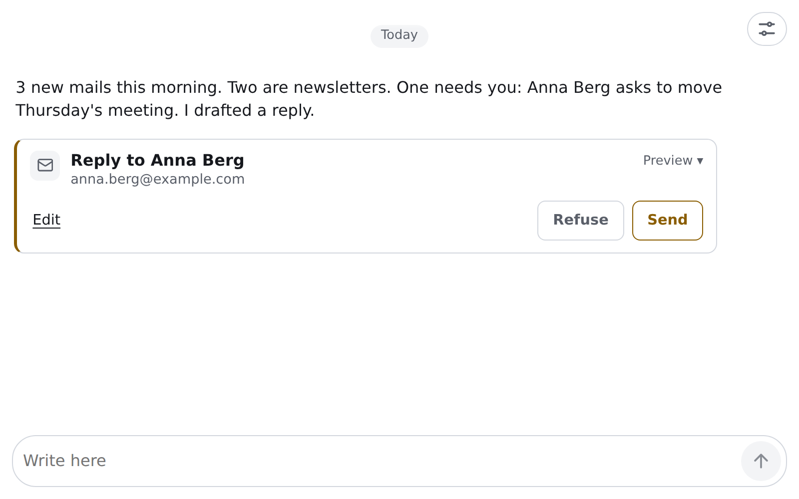

Use case
Self-hosted AI agents for a small team
One server for the office. Each client's work in its own agent.

A chat, not a terminal.
- One agent per client, with only that client's folder.
- Several operators sign in, each with a password.
- Share one conversation with a QR code. Revoke at any time.
How
- Install on the office machine.
- One agent per client, or per task.
- Share a conversation with a colleague's phone.
Limits
- A colleague given the terminal can type anything in it.
- What agents read goes to their AI provider.
Questions
Does a colleague need an account?
No. A one-use QR code; their device makes its own key and sees that one conversation.
Can I see who has what?
Yes. One screen draws every device, agent and asset, and each right.
Can I copy a setup to another office?
Yes, as one file: settings only, never a secret or a password.